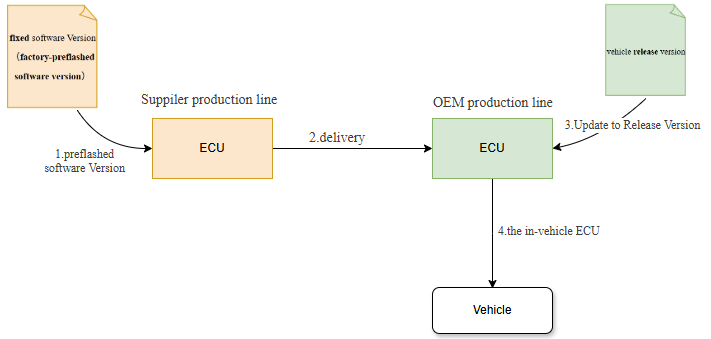

开心果 Need Car · 2026-05-05T06:45:00+08:00 · 微信原文
在现代汽车中，电子控制单元（ECU）被称为汽车的“神经中枢”和“大脑”。从发动机控制、制动系统到智能驾驶辅助，几乎所有关键功能都离不开 ECU。而很多人并不知道，一颗真正装在车上的 ECU，在到达用户手中之前，往往要经历多次软件版本的演变。

从如上流程图中，我们可以清晰地看到一个 ECU 软件从供应商到整车的完整旅程。
第一阶段：预刷软件——让 ECU “先会呼吸”
流程的起点，是固定的软件版本（factory pre-flashed software version）。在供应商（Supplier）的生产线上，ECU 在完成硬件制造后，首先会被刷入一个预刷软件版本。
这个版本的目标并不是实现车辆的全部功能，而是保证 ECU“能活着”——也就是说，具备最基本的启动、通信和诊断能力。这就像新生儿刚出生时，医生首先要确认心跳和呼吸是否正常。
这一阶段的软件通常是固定版本（fixed version），变化很少，重点在于稳定和可制造性，便于产线自动化和大批量生产。
第二阶段：交付——ECU 离开“出生地”
完成预刷后，ECU 会作为一个独立的零部件，从供应商的生产线交付（delivery）给整车厂（OEM）。
此时的 ECU 虽然已经具备基础能力，但还不能直接装车使用，因为它还不知道自己将被用在哪一款车型上、对应什么配置、需要哪些功能。
换句话说，这一阶段的 ECU 更像是一部“刚出厂、还没装系统和应用”的电脑主板。
第三阶段：升级到发布版本——真正“学会本职工作”
当 ECU 进入整车厂的生产线后，会迎来关键的一步：升级到车辆使用的发布版本（vehicle release version）。
这个版本通常由整车厂主导定义，融合了整车平台需求、功能配置、安全策略和法规要求，是最终允许装车的正式软件。
这一步的升级，往往是在整车厂产线、EOL（End of Line）或指定刷写工位完成。
在这里，ECU 会被注入完整的应用逻辑、车辆参数和安全机制，相当于接受“岗前培训”，明确自己的职责和工作环境。
第四阶段：装车——成为“实际装车的控制器”
当 ECU 刷入发布版本并通过校验后，它就会作为实际装车的控制器（the controller installed in the vehicle），被安装到车辆中。
此时，它不再是一个通用模块，而是车辆整体系统的一部分，要与其他几十甚至上百个 ECU 协同工作。
从这一步开始，这颗 ECU 就真正走上了“道路”：它会在用户驾驶的每一刻控制执行器、接收传感器数据、保障车辆安全与性能。
为什么要分这么多软件阶段？
从表面看，多次刷写和版本切换似乎增加了复杂度，但背后的逻辑非常清晰：
供应商侧关注的是制造效率与硬件一致性
整车厂侧关注的是整车功能、安全和法规
分阶段软件策略可以降低风险、提高质量、方便追溯
这种流程，正是现代汽车软件工程与工业化生产深度结合的典型体现。
写在最后
一辆看似普通的汽车，背后是复杂而严谨的软件生命周期管理。从预刷软件到发布版本，从供应商产线到整车上路，每一次升级和交付，都是为了让车辆更加安全、可靠和可持续演进。
下一次当你启动车辆时，不妨想一想：这辆车里的 ECU，已经走过了一条漫长而精密的“成长之路”。
往期精彩回顾